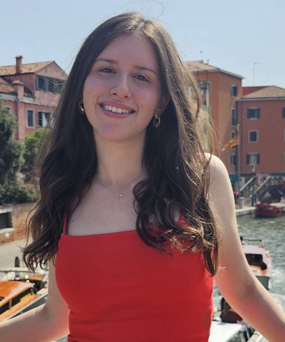

Theory, algorithms & complexity
What are the fundamental limits of the algorithms behind machine learning, and how close can we get to them?
MSc Computer Science · ETH Zurich
Hey :) I’m curious about how and why machine learning works.
I am a master's student at ETH Zurich (major in Machine Intelligence) and a research fellow at SPAR, where I work on model symmetries as a tool for interpretability. Before that I did my BSc in Computer Science at Sofia University (top 1% of my cohort), working with Prof. Preslav Nakov and Prof. Ivan Koychev on LLM evaluation. I also spent a summer at ETH in Prof. Dennis Komm's Algorithms & Didactics lab, where together with Tiago Pimentel we proved that optimal tokenisation is NP-complete. This summer I was a quantitative trading intern at IMC in Amsterdam.
I came to computer science through mathematics olympiads. I have competed internationally for Sofia University and spent three years teaching mathematics and programming to more than 350 students. Outside research, I like drawing, travelling, reading, video games and cats.

Byte n-gram Encoding appeared at TokShop, a workshop at COLM 2026.
Started my MSc at ETH Zurich and joined SPAR as a research fellow.
How Correct Is Your Answer? is out on arXiv, accepted to EMNLP 2026 Findings.
Graduated with a BSc in Computer Science from Sofia University.
Started a quantitative trading internship at IMC Trading in Amsterdam.
Named Student of the Year in Mathematics & Informatics for the second time.
Tokenisation over Bounded Alphabets is Hard was presented at ICLR 2026.
Received the Google Generation Scholarship (EMEA).
Joined ETH Zurich as a Summer Student Research Fellow in Dennis Komm's group.
Named Student of the Year at Sofia University.
Named Student of the Year in Mathematics & Informatics at Sofia University.
Won team gold and individual silver at OMOUS, the international mathematical olympiad for university students, among 600+ competitors from 20+ countries.
What are the fundamental limits of the algorithms behind machine learning, and how close can we get to them?
What is actually happening inside a neural network, and can we understand it well enough to trust it?
Why do models break under jailbreaks and adversarial inputs, and how do we make them reliably safe?
I am curious about almost everything in ML and theoretical CS, and always happy to explore a new direction. If you have an interesting problem, I'd love to hear about it.
* equal contribution
Shows that finding an optimal tokeniser is NP-complete for both direct and bottom-up (BPE-style) tokenisation, even when the alphabet is binary or unary, and that greedy BPE-style tokenisation has an unbounded approximation ratio over unary alphabets.
A framework and taxonomy for judging the semantic correctness of open-ended answers, going beyond string matching when evaluating question-answering systems.
A fast detector for machine-generated code built on stylometric features, AST-based structural cues and a custom programming-language identification pipeline.
Generalises BPE to multi-symbol merges, improving compression while keeping downstream language-model performance comparable.
Major in Machine Intelligence, minor in Theoretical Computer Science.
GPA 5.88 / 6.00, top 1% of the cohort. Faculty of Mathematics and Informatics.
1 BNT Play is only available from Bulgarian IP addresses. ↩
Best Performing Student out of 15,000+ bachelor's, master's and PhD students.
Selected from over 1,200 students for olympiad results and academic excellence.
For achievements in computer science and mathematics, teaching, and representing the university internationally.
For outstanding performance in computer science and mathematics, and commitment to leadership and inclusion.
Top 20 across EMEA.
One of two women selected nationwide.
Gold medal · 2024 · 600+ students from 20+ countries
Silver medal · 2024 · 5-hour individual contest
Silver-medal performance · 2025 · 11th of 48 in Category II
Winner · 2025 · month-long contest, some problems with no known solution
First-place gold · 2023 · Silver · 2024
Silver medals · 2023, 2024, 2025
Silver and bronze medals · 2023, 2024, 2025
Innovation Award by Wiser Technology · 2025 · for ASOCIAL
…and many more medals from national olympiads.
Head Teaching Assistant · Sofia University · 2023 – 2026
I taught the exercise sessions for every course below, for more than 350 undergraduates, working with 10+ professors across 5 departments. I also prepared the university mathematics team for international competitions.
A multi-agent simulation where LLM-powered personas interact in a synthetic social network, used to study emergent behaviour. Innovation Award at FMI Codes 2025.
LLM agents · PythonRibonanzaNet3D, an AlphaFold-inspired transformer that predicts RNA 3D structure from residue sequences (Stanford RNA 3D Folding challenge).
PyTorch · TransformersA transformer decoder that completes English sentences and then translates them into Bulgarian. Trained on 180k sentence pairs, BLEU above 35.
PyTorch · NLPFor the Citadel Datathon: does gasoline price volatility predict energy-sector returns? VAR models, Granger causality and ensembles.
Time series · StatisticsA machine-checked reduction from Clique to Vertex Cover in the Coq proof assistant. To my knowledge, no formal proof of this was available at the time.
Coq · Complexity theoryGPT-2 fine-tuned to write lyrics in the style of pop artists, with experiments on sampling temperature.
GPT-2 · Fine-tuningClassifying songs by genre from their lyrics with Naive Bayes, logistic regression, SVMs and random forests.
scikit-learnSupervisory Board, Public Relations and Foreign Affairs committees. Organised student initiatives and international outreach.
Took part in curriculum reform and academic policy affecting 2,000+ students.
Mentored first-year students and organised orientation activities.
Invites lecturers to speak to students passionate about informatics and mathematics.
Gave cybersecurity lectures to children.